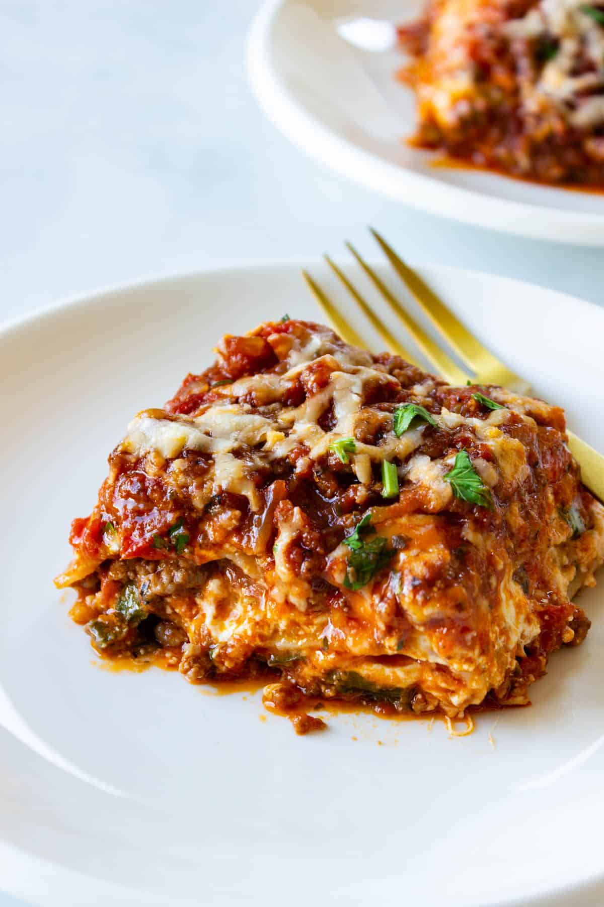

Learn how to make a tasty lasagna inspired by italian recipes, very easy to make at home and friendly for beginners at cooking.
Lasagna is one of the most representative dishes from italian cuisine, perfect for family gatherings or any other special occasion.
Step 1
In a skillet over medium heat, sauté the celery, onion, and carrot with a drizzle of olive oil and the bay leaf until golden brown. Add the ground beef, pork, and bacon, and cook until the meat begins to brown. Season with salt and pepper. Add the red wine and cook until it has completely evaporated, then reduce the heat to low and stir in the tomato puree. Add 2 cups of water, or enough to cover the meat mixture, and simmer gently for at least 30 minutes. Discard the bay leaf.
Step 2
While the meat sauce is cooking, prepare the béchamel sauce. Melt the butter in a heavy-bottomed saucepan, add the flour, and cook over low heat for 3-4 minutes, stirring constantly, until smooth. Heat the milk in a separate saucepan, then gradually whisk it into the butter and flour mixture. Adjust the seasoning with salt and a pinch of nutmeg, and continue cooking, stirring constantly to prevent lumps from forming, until the sauce is thick and creamy. If the béchamel is too thick, add a little more milk. If it's too thin, cook for a few more minutes.
Step 3
Preheat the oven to 180°C (350°F). Butter a 22x33cm (9x13 inch) baking dish and place the first layer of lasagna sheets lengthwise. Spread a layer of meat sauce evenly over the lasagna, followed by the béchamel sauce and a generous sprinkle of grated Parmesan cheese. Repeat this process, layering lasagna sheets, meat sauce, and béchamel sauce until all the ingredients are used. Finish with a layer of béchamel sauce, a generous layer of cheese, and a few pats of butter.
Step 4
Bake the lasagna for 25-30 minutes or until golden brown. Let it rest for 5 minutes before serving.